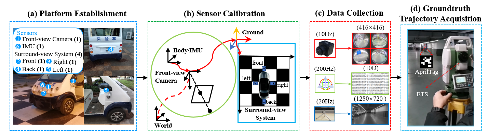
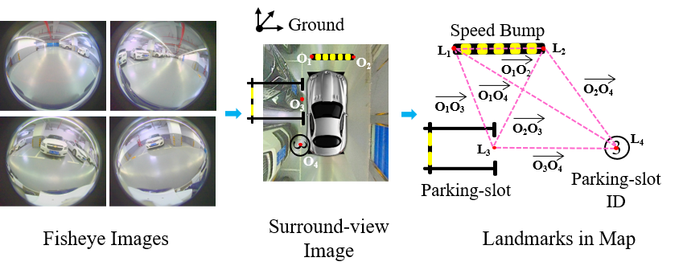

|
SLAM for Indoor Parking: A Comprehensive Benchmark Dataset and a Tightly Coupled Semantic Framework Xuan Shao1, Ying Shen1, Lin Zhang1, Shengjie Zhao1, Dandan Zhu2 and Yicong Zhou3 1 School of Software Engineering, Tongji University, Shanghai, China 2 Artificial Intelligence Institute, Shanghai Jiao Tong University, Shanghai, China 3 Department of Computer and Information Science, University of Macau, Macau, China |
BeVIS Benchmark Dataset
(pw: 2bn0)
Currently in the BeVIS, there are totally 34,951 front-view images, 34,951 IMU motion data segments with each segment recording the vehicle motion between each two consecutive front-view images, and 12,032 surround-view images (synthesized from 48,128 fisheye images) collected in four indoor parking environments at Tongji University, covering a wide variety of real cases for autonomous indoor parking. One advantage of the BeVIS is the diversity of the conditions for data collection, ranging from static scenes with bright illumination to dynamic scenes with poor illumination. To exploit this advantage, we manually classify all the data in the BeVIS into three levels, “easy”, “medium” and “difficult”. In addition, another outstanding advantage of the BeVIS is the availability of the groundtruth trajectories for each sequence, ensuring objective evaluation of different SLAM systems for autonomous indoor parking.

The BeVIS is only for acamedic use under the GNU General Public License Version 3 (GPLv3). For commercial purposes, please contact the authors for details.
VISSLAM-2
VISSLAM-2 is built on our previous work VISSLAM published in ACM MM 2020. Compared with VISSLAM that incorporates only adjacent parking-slots in the indoor parking environments, VISSLAM-2 provides a general form to model various semantic objects on the ground.

Last update: November 8, 2021